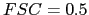
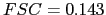
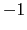

Next: Utility programs
Up: Standard image/volume operations (ops)
Previous: Program: simple_stackops
Contents
Program: simple_volops
simple_volops provides standard single-particle image processing routines that are applied to MRC or SPIDER volumes.
$ SIMPLE_VOLOPS [vol1=<invol.ext>] [vol2=<invol2.ext>] [smpd=<sampling}
distance(in A)>] [outvol=<outvol.ext>] [nthr=<nr of openMP threads{1}>]
[phrand=<yes|no{no}>] [msk=<mask radius(in pixels)>] [lp=<low-pass
limit{20}>] [hp=<high-pass limit{100}>] [snr=<signal-to-noise ratio>]
[center=<yes|no{no}>] [soften=<yes|no{no}>] [guinier=<yes|no{no}>]
[bfac=<bfactor(in A**2){200.}>] [edge=<edge size for softening molecular
envelope(in pixels){3}>] [mskfile=<mask.ext>] [countvox=<yes|no{no}>]
[newbox=<scaled box>] [scale=<scale factor{1}>] [msktype=<hard|soft{soft}>]
[inner=<inner mask radius(in pixels)>] [width=<pixels falloff inner
mask{10}>] [cube=<side (in pixels){0}>] [e1=<1st Euler{0}>] [e2=<2nd
Euler{0}>] [e3=<3d Euler{0}>] [corner=<corner size{0}>]
[neg=<yes|no{no}>] [voltab=<file table>] [voltab2=<file table>]
[bin=<yes|no{no}>] [nvox=<nr of voxels{0}>] [xsh=<x shift(pixels){0}>]
[ysh=<y shift(pixels){0}>] [zsh=<z shift(pixels){0}>]
Comments: If you input two volumes and the sampling distance, the FSC is calculated between the volumes. The FSC plot is written to STDOUT together with resolution estimates at 
and 
. The volumes subjected to FSC calculation should be masked with a soft-edged (not hard-edged) mask and they should not have been subjected to any "auto" or threshold masking. If phrand and lp are given, the Fourier phases of the input volume vol1 are randomized. msk is used for spherical masking with a soft (cosine edge) fall-off. lp and hp are the low-pass and high-pass limits used for filtering. To add noise to a volume, give the desired signal-to-noise ratio via snr. Give center=yes and lp to center the input volume according to center of mass. The 3D origin shift vector is found by low-pass filtering the volume to lp, binarizing the density, identifying the center of mass, and calculating the vector needed to place the center of mass in the center of the box. soften=yes applies a real-space low-pass filter using pixel width edge. mskfile is used for masking a volume using an externally generated mask. countvox=yes counts the number of foreground voxels (the binarization method is k-means). newbox and scale are used for resizing the volume. msktype controls the mask type (hard or soft). inner controls the radius of the inner mask with fall-off width. cube is used to generate a binary cube (4 testing purposes). e1,e2,e3 is the Euler triplet used to rotate the input volume using Kaiser-Bessel interpolation in Fourier space. corner is used for filling in the corners of the box with binary cubes (4 testing purposes). neg inverts the contrast of the input volume by multiplication with 
in Fourier space. voltab and voltab2 are used to give text files with the names of volume files that are correlated and the nearest neighbour structure of the comparison is written to STDOUT.
Next: Utility programs
Up: Standard image/volume operations (ops)
Previous: Program: simple_stackops
Contents
Hans Elmlund
2016-05-24